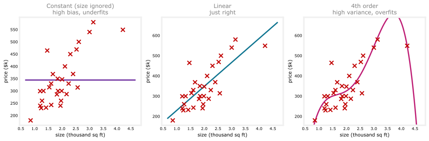
Bias and Variance
machine-learning
neural-networks
Diagnosing underfitting and overfitting with J_train and J_cv, regularization and lambda, baselines, learning curves, the six fixes, and bias and variance in neural networks.
Training a machine learning model almost never works well on the first try. The typical workflow is: have an idea, train the model, find it does not work as well as hoped, and figure out what to change. The single most useful piece of guidance for that last step is looking at a model’s bias and variance.
Underfitting, Overfitting, and Just Right
Recall the underfitting and overfitting example from the first course. This page uses the same real Portland housing dataset as the linear regression page, 47 houses with a size and a sale price. Thirty houses, picked at random, are held out as a training set; the other seventeen become the cross-validation set used throughout this page.
The constant model, which predicts the same price no matter the size, has high bias, another name for underfitting; it throws away the one piece of information the model has. The fourth-order polynomial swings to the opposite problem: it wiggles to chase the 30 training points, which is high variance, another name for overfitting. In the middle, a linear fit, the same straight line from the earlier linear regression page, is neither too simple nor too wiggly, what the lectures call just right.
With a single feature \(x\), you can plot \(f\) and see this directly. But with more features, plotting \(f\) stops being possible, the same limitation from Model Evaluation and Selection. What you need instead is a systematic way to diagnose bias and variance using numbers. That is exactly what \(J_{train}\) and \(J_{cv}\) are for.
Review Questions
1. Match each term to its meaning: high bias, high variance, just right.
TipAnswer
High bias means underfitting, the model is too simple to capture the pattern (like a constant that ignores the input entirely). High variance means overfitting, the model is too flexible and chases the noise in the training data (like a high-degree polynomial). Just right means the model captures the underlying pattern without chasing noise.
Diagnosing Bias and Variance with \(J_{train}\) and \(J_{cv}\)
Look at the three models again, now through \(J_{train}\) (the training error) and \(J_{cv}\) (the cross-validation error).
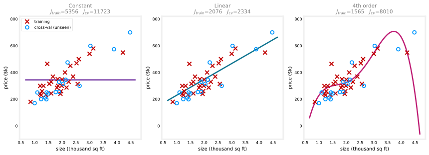
High Bias: \(J_{train}\) Is High
Look at the constant model on the left. Predicting the average price for every house, regardless of size, produces large errors even against the training examples themselves, so \(J_{train}\) is high (\(5{,}356\), in squared-$k units). New houses it never saw fare about as poorly, so \(J_{cv}\) is also high (\(11{,}723\)) and the same order of magnitude as \(J_{train}\). This is the signature of high bias: the model is not even doing well on the data it trained on.
High Variance: \(J_{cv}\) Is Much Greater Than \(J_{train}\)
Now look at the fourth-order model on the right. It bends to fit the 30 training houses closely, so \(J_{train}\) is low (\(1{,}565\)). But evaluated on the 17 held-out houses it never saw, the errors are much larger, \(J_{cv} = 8{,}010\), roughly five times \(J_{train}\). This is the signature of high variance: the model does far better on data it has seen than on data it has not.
Just Right: Both Are Low
The linear model in the middle has a low \(J_{train}\) (\(2{,}076\), comparable to the training error of the quartic model) and a low \(J_{cv}\) (\(2{,}334\), close to \(J_{train}\) rather than ballooning). Low \(J_{train}\) rules out high bias, and \(J_{cv}\) not being much worse than \(J_{train}\) rules out high variance, which is exactly why the plain linear fit is the good choice for this dataset.
To summarize the pattern from these three models:
| Model | \(J_{train}\) | \(J_{cv}\) | Diagnosis |
|---|---|---|---|
| Constant | 5,356 (high) | 11,723 (high) | High bias (underfitting) |
| Linear | 2,076 (low) | 2,334 (low) | Just right |
| 4th order | 1,565 (low) | 8,010 (high) | High variance (overfitting) |
Even without plotting \(f\), computing just these two numbers tells you which regime a model is in.
Review Questions
1. A model has \(J_{train} = 850\) and \(J_{cv} = 890\), both fairly high and close together. What does this suggest?
TipAnswer
High bias. The key indicator for high bias is \(J_{train}\) itself being high; when that happens, \(J_{cv}\) is usually close to \(J_{train}\) rather than dramatically higher.
1. A model has \(J_{train} = 3\) and \(J_{cv} = 320\). What does this suggest?
TipAnswer
High variance. \(J_{train}\) is low, so the model fits the training data well, but \(J_{cv}\) is much greater than \(J_{train}\), meaning it does far worse on data it has not seen. That gap is the signature of overfitting.
1. If the model’s cross-validation error \(J_{cv}\) is much higher than the training error \(J_{train}\), this is an indication that the model has…
high bias
low bias
high variance
low variance
TipAnswer
c. High variance. \(J_{cv} \gg J_{train}\) means the model fits the training data much better than it generalizes to new data, the definition of overfitting.
\(J_{train}\) and \(J_{cv}\) Versus Polynomial Degree
A different view makes the whole pattern visible at once: plot \(J_{train}\) and \(J_{cv}\) as a function of the polynomial degree \(d\), from a constant on the left (\(d=0\), size ignored entirely) to a higher-order polynomial on the right (no regularization here).
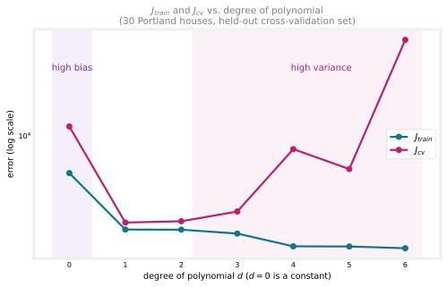
\(J_{train}\) (teal) keeps going down as the degree increases, from \(5{,}356\) at \(d=0\) down to \(1{,}516\) at \(d=6\). A constant does not fit the training data at all; a straight line fits it much better; a cubic better still. More flexibility always lets the curve hug the training points more closely.
\(J_{cv}\) (magenta) behaves differently, tracing a U shape. It starts at \(11{,}723\) for \(d=0\), drops to its low of \(2{,}334\) at \(d=1\), then climbs back up, past \(8{,}010\) at \(d=4\) and all the way to \(50{,}256\) by \(d=6\), where the polynomial is wiggling wildly between the training points. The errors span such a huge range that the plot uses a log scale; on a plain scale the \(d=6\) point would squash everything else flat. Notice also the small dip from \(d=4\) to \(d=5\): real data produces wobbly curves, not the perfectly smooth U of a textbook sketch, but the overall shape is unmistakable. At low degree the model underfits, so it does not do well on the cross-validation set either. At high degree it overfits the training set and fails to generalize. Only near \(d=1\), where the model is flexible enough to capture the size-price trend but not so flexible it chases noise, does \(J_{cv}\) reach its lowest point.
That valley is exactly why the plain linear fit ended up as the best choice for this dataset: it sits right at the bottom of the \(J_{cv}\) curve.
The Diagnosis Rule
The two indicators from before now correspond to the two ends of this curve.
NoteHow to read the curve
- High bias shows up on the left, where \(J_{train}\) itself is high, and \(J_{train}\) and \(J_{cv}\) sit close together.
- High variance shows up on the right, where \(J_{train}\) is usually low, but \(J_{cv}\) is much greater than \(J_{train}\) (written \(J_{cv} \gg J_{train}\), using the “much greater than” symbol).
Review Questions
1. As the polynomial degree increases, why does \(J_{train}\) keep going down while \(J_{cv}\) eventually goes back up?
TipAnswer
A higher-degree polynomial has more flexibility to bend through the training points exactly, so \(J_{train}\) keeps shrinking. But past some point, that extra flexibility starts fitting the noise in the training data rather than the underlying pattern, which hurts performance on new data, so \(J_{cv}\) rises again even as \(J_{train}\) keeps falling.
1. On the \(J_{train}\)/\(J_{cv}\)-versus-degree curve, where does high bias appear, and where does high variance appear?
TipAnswer
High bias appears on the left side of the curve (low degree), where \(J_{train}\) is high and close to \(J_{cv}\). High variance appears on the right side (high degree), where \(J_{train}\) is low but \(J_{cv}\) is much greater than \(J_{train}\).
Can a Model Have Both at Once?
So far bias and variance looked like opposite ends of one curve. It turns out that, in some cases, a model can have both high bias and high variance at the same time. This is rare for linear regression on a single feature, but it can happen when training a neural network on more complex problems.
The signature is \(J_{train}\) being high, and \(J_{cv}\) being even higher still, much greater than \(J_{train}\).
To build intuition for what that looks like, imagine an (artificial) single-feature example where the model overfits part of the input range and underfits another part.
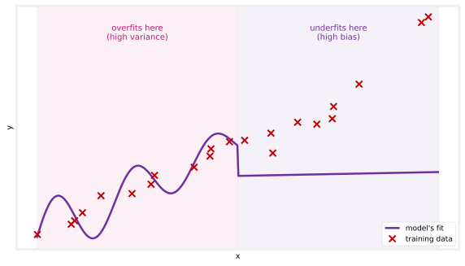
For part of the input (left region), the model is far too complicated and wiggles to chase every training point, overfitting. For another part of the input (right region), the same model, for whatever reason, does not even fit the training data well there, underfitting. Overall, that model would show up as \(J_{train}\) high (because of the badly-fit region) and \(J_{cv}\) even higher still (because of the badly-generalizing region).
For most applications, a model has primarily a high-bias problem or primarily a high-variance problem, not both. But it is possible for both to happen together, particularly in neural networks on harder problems.
Review Questions
1. What combination of \(J_{train}\) and \(J_{cv}\) signals that a model has both high bias and high variance?
TipAnswer
\(J_{train}\) is high (the model does not even fit the training set well overall), and \(J_{cv}\) is much greater still than \(J_{train}\) (it generalizes even worse). This is the “high bias and high variance at once” pattern.
1. In the artificial single-feature example, what does the model do in the region where it overfits, and what does it do in the region where it underfits?
TipAnswer
In the overfitting region it is too complicated, bending to chase individual training points including their noise. In the underfitting region it is too simple for that part of the data and misses the pattern even on the training examples themselves.
The key takeaways so far are that high bias means a model is not even doing well on the training set, and high variance means it does much worse on the cross-validation set than on the training set. Figuring out which of these, if either, a learning algorithm suffers from is one of the most useful habits in building machine learning systems, since it points directly at what to fix next. The degree of the polynomial is only one knob that moves a model along the bias-variance spectrum. The next sections look at the other big knob, regularization, and then at how to judge these errors against a baseline, what learning curves reveal, and what all of it means for neural networks.
Regularization and Bias/Variance
The polynomial degree \(d\) is one way to control a model’s flexibility. The other is the regularization parameter \(\lambda\) from regularization, which controls the trade-off between keeping the parameters \(w\) small and fitting the training data well. Take the same fourth-order polynomial from before, but now fitted with regularization on the same 30 training houses, and watch what different choices of \(\lambda\) do.
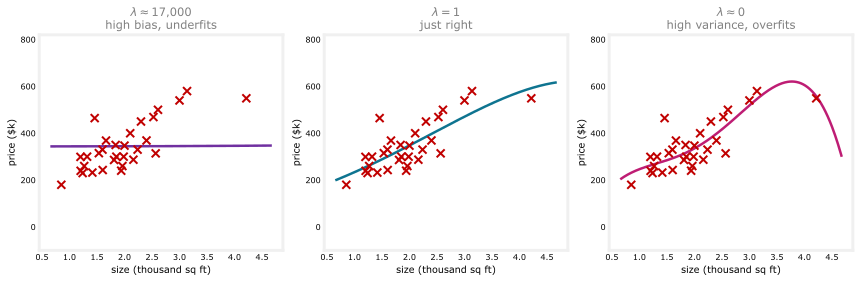
- \(\lambda\) very large (left), \(\lambda \approx 17{,}000\). The algorithm is highly motivated to keep the parameters \(w\) tiny, so \(w_1, \dots, w_4\) all end up very close to zero and the model collapses to roughly \(f(x) \approx b\), a nearly flat line. It clearly has high bias and underfits; \(J_{train} = 5{,}317\) and \(J_{cv} = 11{,}613\), both high, just like the constant model earlier.
- \(\lambda \approx 0\) (right). Almost no regularization, so this is close to the wiggly fourth-order fit from before, which overfits. \(J_{train} = 1{,}732\) is small, but \(J_{cv} = 4{,}077\), more than double, the high-variance signature.
- \(\lambda = 1\) (middle). Not huge, not zero. The model is just right, \(J_{train} = 2{,}024\) and \(J_{cv} = 2{,}476\), both low and close together, essentially matching the plain linear fit’s performance.
Choosing \(\lambda\) with Cross-Validation
How do you pick a good \(\lambda\)? The same way you picked the polynomial degree on Model Evaluation and Selection. Try a range of values, fit parameters for each, and let the cross-validation set judge.
Try \(\lambda = 0\), minimize the cost, get parameters \(\vec{w}^{\langle 1 \rangle}, b^{\langle 1 \rangle}\), and compute \(J_{cv}(\vec{w}^{\langle 1 \rangle}, b^{\langle 1 \rangle})\). Try \(\lambda = 0.01\) to get \(\vec{w}^{\langle 2 \rangle}, b^{\langle 2 \rangle}\) and its \(J_{cv}\). Keep doubling, \(0.02, 0.04, \dots\), until \(\lambda \approx 10\), giving perhaps twelve candidates ending with \(\vec{w}^{\langle 12 \rangle}, b^{\langle 12 \rangle}\). If, say, \(J_{cv}(\vec{w}^{\langle 5 \rangle}, b^{\langle 5 \rangle})\) comes out lowest, pick that \(\lambda\) and use \(\vec{w}^{\langle 5 \rangle}, b^{\langle 5 \rangle}\). Finally, report the generalization estimate with the test set, \(J_{test}(\vec{w}^{\langle 5 \rangle}, b^{\langle 5 \rangle})\).
\(J_{train}\) and \(J_{cv}\) Versus \(\lambda\)
Plotting the two errors as a function of \(\lambda\) hones the intuition. The curve below is computed by repeating the fit on 300 different random 30/17 splits of the 47 houses and averaging, so the underlying shape shows clearly rather than being noisy from just one split.
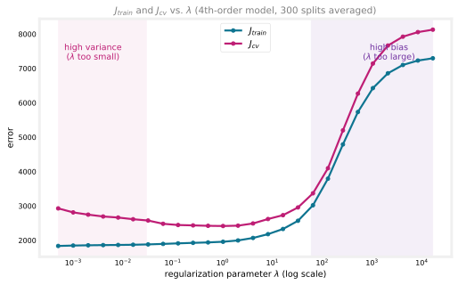
\(J_{train}\) keeps rising as \(\lambda\) grows, from about \(1{,}837\) at the smallest \(\lambda\) tried up to \(7{,}296\) at the largest. The larger \(\lambda\) is, the more weight the optimization gives to keeping the parameters small, and the less attention it pays to actually fitting the training set, so the training error creeps up.
\(J_{cv}\) is U-shaped again, starting near \(2{,}929\), dropping to a minimum of about \(2{,}416\) around \(\lambda \approx 1\), then climbing all the way to \(8{,}129\) at the largest \(\lambda\). Too small a \(\lambda\) overfits (left side, high variance), too large a \(\lambda\) underfits (right side, high bias), and some intermediate value performs best. Cross-validation is simply sampling this curve at many values of \(\lambda\) and picking a low point.
Compare this diagram with the degree-of-polynomial one from earlier. The roles of the two sides have swapped. On the degree plot, the left side (simple model) was high bias and the right side (complex model) was high variance. Here it is flipped, because small \(\lambda\) means a free, complex model (high variance on the left) while large \(\lambda\) forces a rigid, simple one (high bias on the right).
Look closely at the two plots, though, and they do not actually look like mirror images. The degree plot needed a log scale just to fit its \(d=6\) point, which is 20 times its own minimum; the \(\lambda\) plot never needed one, its right-hand climb only reaches about 3 times its minimum. One curve explodes, the other just creeps up. That asymmetry is real: this is a small, noisy, 30-house dataset, and a wildly overfit degree-6 polynomial is a far more extreme model than any amount of L2 regularization on a degree-4 one, so there is no reason to expect the two plots to match in scale.
What does carry over is the shape, not the size. Drawn on an idealized sketch, where both axes are scaled to look similar, the underlying pattern really is a mirror image.
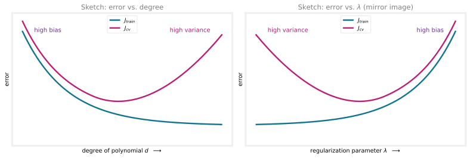
The right sketch is literally the left one flipped horizontally, because the two knobs move model complexity in opposite directions: increasing the degree makes the model more complex, while increasing \(\lambda\) makes it less complex. In both cases, cross-validation picks out the sweet spot at the bottom of the \(J_{cv}\) curve.
Review Questions
1. What happens to a regularized model when \(\lambda\) is set to a huge value like 10,000, and what does that do to bias and variance?
TipAnswer
The algorithm is forced to keep all the weights \(w\) close to zero, so the model collapses to roughly the constant \(f(x) \approx b\). It underfits badly, which is high bias, and \(J_{train}\) is large.
1. Why does \(J_{train}\) increase as \(\lambda\) increases?
TipAnswer
Larger \(\lambda\) puts more weight on the regularization term that keeps parameters small, so the optimization pays correspondingly less attention to minimizing the training error. Fitting the training set well stops being the priority, and \(J_{train}\) rises.
1. In what sense are the error-versus-degree and error-versus-\(\lambda\) plots mirror images, and in what sense are they not?
TipAnswer
In shape: on the degree plot, complexity grows to the right, so high bias sits on the left and high variance on the right. On the \(\lambda\) plot, growing \(\lambda\) reduces complexity, so high variance sits on the left (tiny \(\lambda\), unconstrained model) and high bias on the right (huge \(\lambda\), nearly constant model). The two axes move model complexity in opposite directions, which is what the idealized sketch captures. But in scale, the two computed curves on real data are not symmetric at all; the degree curve’s high-variance side blows up far more dramatically (needing a log scale) than the \(\lambda\) curve’s high-bias side.
Establishing a Baseline Level of Performance
The diagnosis so far leaned on words like “high” and “much higher.” What do those actually mean as numbers? A concrete example makes the point. Consider speech recognition, where users speak a web search like “what is the weather today?” into a phone, and the algorithm must produce the transcript. The training error here means the percentage of audio clips in the training set that the algorithm does not transcribe correctly in its entirety.
Say a speech system reaches
- \(J_{train} = 10.8\%\) (it transcribes 89.2 percent of training clips perfectly and makes some mistake on the rest), and
- \(J_{cv} = 14.8\%\).
The training error looks really high. Getting 10 percent of even the training set wrong seems like a clear high-bias problem. But one more measurement changes the picture. Ask how well humans do on the same clips. It turns out fluent speakers achieve \(10.6\%\) error, because a lot of the audio is simply noisy (“I am going to navigate to [inaudible]”), and nobody can transcribe those clips correctly. If even a person gets 10.6 percent wrong, expecting an algorithm to do much better is unrealistic.
Measured against that baseline, the algorithm is only \(0.2\%\) worse than humans on the training set, which is excellent. The real problem is the \(4.0\%\) gap between \(J_{train}\) and \(J_{cv}\). This system has a variance problem, not the bias problem the raw 10.8 percent suggested.
Two Gaps to Measure
A baseline level of performance is the level of error you can reasonably hope your algorithm to eventually reach. Common ways to establish one are
- human-level performance, which works especially well for unstructured data such as audio, images, or text, where people are very good;
- a competing or previous algorithm, if one exists and can be measured; or
- a guess based on prior experience.
With a baseline in hand, the diagnosis uses two gaps. The gap between the baseline and \(J_{train}\) measures bias, and the gap between \(J_{train}\) and \(J_{cv}\) measures variance.
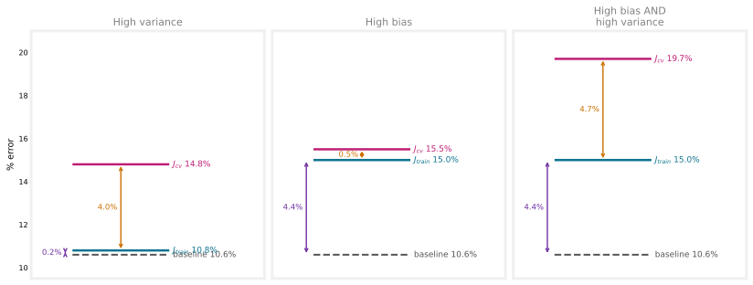
| Scenario 1 | Scenario 2 | Scenario 3 | |
|---|---|---|---|
| Baseline (human level) | 10.6% | 10.6% | 10.6% |
| \(J_{train}\) | 10.8% | 15.0% | 15.0% |
| \(J_{cv}\) | 14.8% | 15.5% | 19.7% |
| Baseline-to-train gap (bias) | 0.2% | 4.4% | 4.4% |
| Train-to-cv gap (variance) | 4.0% | 0.5% | 4.7% |
| Diagnosis | High variance | High bias | Both |
In scenario 2, the training error is far above what humans achieve (a 4.4 percent gap), while \(J_{cv}\) is only slightly worse than \(J_{train}\), so this one is high bias. In scenario 3, both gaps are large, the rare case of high bias and high variance together.
One more note. Sometimes the baseline is simply zero percent, when perfect performance is realistic. But for applications like speech recognition, where some data is irreducibly noisy, the baseline can be much higher than zero, and judging \(J_{train}\) against it, rather than against zero, gives a much more accurate read.
Review Questions
1. A speech system has \(J_{train} = 10.8\%\) and \(J_{cv} = 14.8\%\). Why is it wrong to conclude high bias, and what extra number changes the diagnosis?
TipAnswer
Human-level performance on the same clips is 10.6% error, because much of the audio is too noisy for anyone to transcribe. Against that baseline, the training error is only 0.2% worse than humans, so there is no meaningful bias problem. The 4.0% gap between \(J_{train}\) and \(J_{cv}\) is the real issue, making this a high-variance problem.
1. Name three ways to establish a baseline level of performance.
TipAnswer
Measure human-level performance (especially good for unstructured data such as audio, images, and text), measure a competing or previous algorithm’s performance, or make a guess based on prior experience.
1. Which two gaps do you compute once you have a baseline, and what does each one indicate?
TipAnswer
The gap between the baseline and \(J_{train}\), which indicates high bias when it is large, and the gap between \(J_{train}\) and \(J_{cv}\), which indicates high variance when it is large.
1. Which of these is the best way to determine whether your model has high bias (has underfit the training data)?
See if the cross-validation error is high compared to the baseline level of performance
See if the training error is high (above 15% or so)
Compare the training error to the cross-validation error
Compare the training error to the baseline level of performance
TipAnswer
d. Compare the training error to the baseline level of performance. A fixed threshold like “above 15%” (b) ignores how hard the task is, and comparing \(J_{cv}\) to the baseline (a) or to \(J_{train}\) (c) speaks to variance, not bias. High bias is specifically about \(J_{train}\) sitting far above what is realistically achievable.
Learning Curves
A learning curve shows how a learning algorithm does as a function of the amount of experience it has, meaning the number of training examples, \(m_{train}\). Plot the error on the vertical axis and the training set size on the horizontal axis, and draw both \(J_{train}\) and \(J_{cv}\). Here is what that looks like for the plain linear model, the “just right” fit from earlier. Each point below is computed by drawing many random subsets of the 30 training houses at that size, fitting a fresh model, and averaging, so the curve reflects the general trend rather than one lucky or unlucky sample.
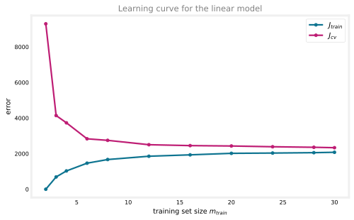
\(J_{cv}\) goes down as the training set grows, from \(9{,}296\) with just 2 houses to \(2{,}334\) with all 30, no surprise. More examples means a better-fit line, so the cross-validation error falls.
\(J_{train}\) actually goes up as the training set grows, from \(0\) up to \(2{,}076\), which surprises most people at first. Watch a straight line try to fit an increasing number of real houses, and the reason appears.
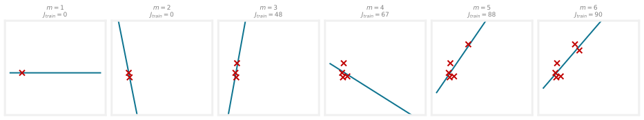
These six houses are drawn from the real training pool. With one or two of them, a straight line passes through every point exactly, so the training error is zero. From three houses on, a single line can no longer hit every price exactly, and \(J_{train}\) climbs, real houses do not fall on a perfectly straight line. The bigger the training set, the harder it is to fit every single example perfectly, so \(J_{train}\) rises with \(m_{train}\). Notice also that \(J_{cv}\) typically sits above \(J_{train}\), since the parameters were fit to the training set, so the model does at least a little better there than on data it never saw.
Learning Curve with High Bias
Now fit a model that is too simple, a constant that ignores size entirely, and watch its learning curve. This time the plot also shows a baseline as a dashed line: take human-level performance to be an error of about \(2{,}100\), roughly what a person estimating price from size alone could manage, and about what the just-right linear model actually achieves.
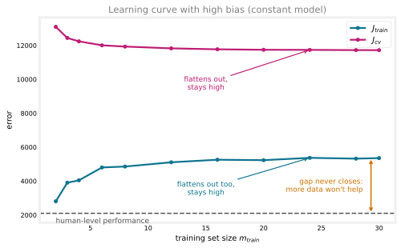
Both curves flatten out, or plateau, after only a handful of houses, around \(5{,}300\) for \(J_{train}\) and \(11{,}700\) for \(J_{cv}\). Predicting the same price regardless of size just does not change much once it has seen a dozen houses; more data barely moves it. Now look at where they plateau relative to the dashed human-level line: even \(J_{train}\) settles more than twice as high as what a human, or the linear model, can already achieve with the same data. That large gap between \(J_{train}\) and the baseline, not a small gap between the two curves, is the high-bias indicator.
Here is the surprising and important conclusion. Imagine extending the plot far to the right with many more houses. Both curves would stay flat at roughly this level, essentially forever. The gap down to human-level performance never closes, because a constant is fundamentally too simple a model, no matter how many more houses it sees.
WarningMore data will not fix high bias
If a learning algorithm has high bias, getting more training data will not, by itself, help much. Having more data is usually good, but a too-simple model stays a too-simple model no matter how many examples you show it. Before investing months in collecting more data, check whether the algorithm has high bias; if it does, you need to do something else first.
Learning Curve with High Variance
Now the opposite case, the fourth-order polynomial with little regularization, the model that overfits.
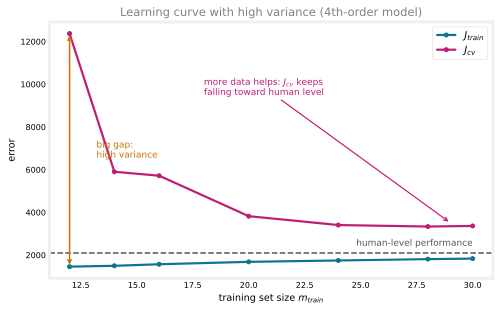
The signature is the gap between \(J_{cv}\) and \(J_{train}\), largest with few houses: at \(m_{train}=12\), \(J_{cv} \approx 12{,}400\) while \(J_{train} \approx 1{,}460\), a nearly 8-fold difference. The model does far better on data it has seen than on data it has not. Notice that \(J_{train}\) even sits slightly below the human-level line; beating a human on examples you have effectively memorized is exactly what overfitting looks like.
But unlike the high-bias case, extending these curves to the right genuinely helps. As \(m_{train}\) grows to all 30 available houses, \(J_{train}\) creeps up only modestly while \(J_{cv}\) falls sharply, from around \(12{,}400\) down to about \(3{,}400\). With enough data, the same flexible model stops being able to memorize and starts being forced to generalize. It has not reached the human-level baseline within just 30 houses, but \(J_{cv}\) is clearly descending toward it, and with access to more real sales, it likely would get close.
NoteMore data does fix high variance
If a learning algorithm suffers from high variance, getting more training data is indeed likely to help, bringing \(J_{cv}\) down toward \(J_{train}\).
One practical note. You can plot learning curves for your own application by training on nested subsets of your data, say 100 examples, then 200, then 300, up to everything you have, plotting \(J_{train}\) and \(J_{cv}\) each time. The downside is cost, since it means training many models, which is why it is not done that often in practice. Even so, the mental picture of these curves is a genuinely useful way to reason about whether an algorithm is bias-limited or variance-limited.
Review Questions
1. Why does \(J_{train}\) increase as the training set gets bigger?
TipAnswer
With very few examples (one or two), a model like a straight line can fit every point exactly, giving zero training error. As more examples arrive, fitting all of them perfectly becomes harder and harder, so the average training error rises.
1. Your model has high bias. Your teammate proposes spending three months collecting five times more data. What do the learning curves say about this plan?
TipAnswer
It will not help much. With high bias, both \(J_{train}\) and \(J_{cv}\) plateau well above the baseline, and extending the curves with more data leaves them flat. The model is too simple, and no amount of extra data changes that. Fix the bias first, for example with a more powerful model.
1. In the high-variance learning curve, \(J_{train}\) stays quite low the whole time while \(J_{cv}\) starts very high. Why is a low \(J_{train}\) here not good news by itself?
TipAnswer
A low \(J_{train}\) just means the model fits the houses it was trained on; an overfitting model can do that by memorizing them, including their noise, rather than learning the real size-price trend. The real measure of performance is \(J_{cv}\), which starts far higher and only comes down as more houses are added.
Deciding What to Try Next, Revisited
Back to the question that opened Model Evaluation and Selection. You built regularized linear regression for housing prices, minimizing the regularized cost
\[ J(\vec{w}, b) = \frac{1}{2m} \sum_{i=1}^{m} \left( f_{\vec{w},b}(\vec{x}^{(i)}) - y^{(i)} \right)^2 + \frac{\lambda}{2m} \sum_{j=1}^{n} w_j^2, \]
and it makes unacceptably large errors. There were six ideas for what to try. It turns out each of them fixes either a high-bias problem or a high-variance problem, and knowing which is which is the payoff for everything on this page. Diagnose which one you have with the two gaps from earlier, baseline to \(J_{train}\) for bias and \(J_{train}\) to \(J_{cv}\) for variance, then find the fix in the table. Notice how each row acts on a piece of the cost above: more examples grow \(m\), feature changes reshape \(f_{\vec{w},b}\) in the first term, and \(\lambda\) scales the second.
| What you could try | Fixes | Why it works |
|---|---|---|
| Get more training examples | High variance | Learning curves show more data pulls \(J_{cv}\) down toward \(J_{train}\) when overfitting. It does not help high bias. |
| Try a smaller set of features | High variance | Fewer features (like dropping \(x^3, x^4, x^5\)) means less flexibility to fit overly complicated, wiggly models. |
| Get additional features | High bias | If price really depends on bedrooms, floors, and age, a model given only size cannot do well even on the training set until it has that information. |
| Add polynomial features | High bias | Like additional features. When a straight line cannot fit the training set well, \(x^2\) and \(x_1 x_2\) terms let it do better. |
| Decrease \(\lambda\) | High bias | Less weight on keeping parameters small means more attention on fitting the training set. |
| Increase \(\lambda\) | High variance | Forces a smoother, less wiggly fit, trading a little training-set accuracy for better generalization. |
NoteSummary of the fixes
- High variance (overfitting) has two main remedies. Get more training data, or simplify the model, either with a smaller set of features or a larger \(\lambda\). Both reduce the model’s flexibility to fit very complex, wiggly curves.
- High bias (underfitting) means the model is not doing well even on the training set, so make the model more powerful. Give it additional features, add polynomial features, or decrease \(\lambda\).
One tempting non-fix deserves a warning. Fixing high bias by reducing the training set size does not work. Yes, a smaller training set is easier to fit, so \(J_{train}\) improves, but the cross-validation error gets worse, and the algorithm’s actual performance drops. Do not throw away training examples to make the training error look better.
Bias and variance is one of those ideas that takes a short time to learn and a lifetime to master, as one practitioner memorably put it. The concepts fit on one page, but recognizing them in the wild, and picking the right fix quickly, is a skill that keeps improving with practice for years.
Review Questions
1. Sort the six fixes into two groups, those that address high bias and those that address high variance.
TipAnswer
High variance: get more training examples, try a smaller set of features, increase \(\lambda\). High bias: get additional features, add polynomial features, decrease \(\lambda\).
1. Why does throwing away training examples not fix high bias, even though it lowers \(J_{train}\)?
TipAnswer
A smaller training set is easier to fit, so the training error improves, but the model itself has not gotten any better. The cross-validation error worsens and real performance drops. The improvement in \(J_{train}\) is cosmetic.
1. Your housing model underfits, with \(J_{train}\) far above the baseline. Which two of these would you try first, and which would you avoid? (a) add the number of bedrooms as a feature, (b) increase \(\lambda\), (c) add \(x^2\) polynomial features.
TipAnswer
Try (a) and (c). Both make the model more powerful, which is what a high-bias model needs. Avoid (b); increasing \(\lambda\) simplifies the model further, which fixes variance, not bias, and would likely make the underfitting worse.
1. You find that your algorithm has high bias. Which of these seem like good options for improving the algorithm’s performance? (Two of these are correct.)
Collect more training examples
Collect additional features or add polynomial features
Remove examples from the training set
Decrease the regularization parameter \(\lambda\)
TipAnswer
b and d. Both make the model more powerful: additional or polynomial features give it more to work with, and a smaller \(\lambda\) lets it fit the training set more closely. Collecting more examples (a) does not fix high bias, and removing examples (c) actively hurts, a smaller training set is easier to fit but generalizes worse.
1. You find that your algorithm has a training error of 2%, and a cross-validation error of 20% (much higher than the training error). Based on the conclusion you would draw about whether the algorithm has a high bias or high variance problem, which of these seem like good options for improving performance? (Two of these are correct.)
Increase the regularization parameter \(\lambda\)
Collect more training data
Reduce the training set size
Decrease the regularization parameter \(\lambda\)
TipAnswer
a and b. \(J_{cv} \gg J_{train}\) is the high-variance signature, so the fixes are the ones that simplify the model or add data: increasing \(\lambda\) (a) and collecting more training data (b). Reducing the training set size (c) would make things worse, not better. Decreasing \(\lambda\) (d) makes the model more flexible, which is the opposite of what a high-variance problem needs.
Bias, Variance, and Neural Networks
High bias and high variance both hurt performance, and before neural networks, machine learning engineers spent a lot of energy on the bias-variance tradeoff, balancing the complexity of a model, the polynomial degree or the value of \(\lambda\), so that neither problem got too bad. Too simple a model gives high bias, too complex gives high variance, and the classic advice was to find the compromise in the middle, like the linear model at the bottom of the \(J_{cv}\) curve for the housing data earlier.
Neural networks, together with big data, offer a way out of that dilemma, with some caveats. The key fact is that large neural networks, trained on small-to-moderate sized datasets, are low-bias machines. Make the network large enough, and you can almost always fit the training set well, so long as the training set is not enormous. That enables a recipe that reduces bias and variance as needed, without trading one for the other.
The loop works like this. Train the model, then ask whether it does well on the training set, meaning \(J_{train}\) is high or not relative to the baseline, such as human-level performance. If not, that is a high-bias problem, and the fix is a bigger neural network, more hidden layers or more hidden units per layer. Keep enlarging until the training error reaches roughly the target level. Then ask whether it does well on the cross-validation set. If not, the gap between \(J_{cv}\) and \(J_{train}\) says high variance, and the fix is more data, after which you retrain and check both questions again. Go around the loop until the model does well on both, at which point you are probably done.
Of course, the recipe has limits. Bigger networks eventually become computationally expensive to train, which is why the rise of neural networks was assisted so much by fast hardware, especially GPUs (graphics processing units, originally built to speed up computer graphics). And more data is not always available; beyond some point it is simply hard to get. But this recipe explains a lot of the rise of deep learning. For applications with access to lots of data, training large networks eventually reaches very good performance. Note also that during the hours, days, or weeks of developing a system, the diagnosis can flip back and forth, high bias at one point, high variance at another, and the current diagnosis is what guides the next move.
Does a Big Network Overfit?
A natural worry about this recipe is whether a very large neural network creates a high-variance problem. It turns out that a large neural network with well-chosen regularization will usually do as well or better than a smaller one. Switching from a small network to a much larger one looks like it should raise the risk of overfitting significantly, but with appropriate regularization, the larger network usually performs at least as well. The one real cost is computational. A bigger network is slower to train and slower at inference, but appropriately regularized, it should rarely hurt performance, and can help significantly.
Regularizing a neural network looks just like regularizing linear or logistic regression. The cost is the average loss plus a penalty on all the weights,
\[ J(\mathbf{W}, \mathbf{B}) = \frac{1}{m} \sum_{i=1}^{m} L\!\left(f(\vec{x}^{(i)}), y^{(i)}\right) + \frac{\lambda}{2m} \sum_{\text{all weights } w} w^2, \]
where the loss can be squared error or logistic loss, and the sum runs over every weight \(w\) in the network. As with linear and logistic regression, the bias parameters \(b\) are usually not regularized, though in practice it makes very little difference either way.
In TensorFlow, this is one argument per layer. Here is the handwritten-digit classifier without regularization, and then with it.
# unregularized
layer_1 = Dense(units=25, activation="relu")
layer_2 = Dense(units=15, activation="relu")
layer_3 = Dense(units=1, activation="sigmoid")
model = Sequential([layer_1, layer_2, layer_3])# regularized: kernel_regularizer applies the lambda penalty to that layer's weights
layer_1 = Dense(units=25, activation="relu",
kernel_regularizer=tf.keras.regularizers.L2(0.01))
layer_2 = Dense(units=15, activation="relu",
kernel_regularizer=tf.keras.regularizers.L2(0.01))
layer_3 = Dense(units=1, activation="sigmoid",
kernel_regularizer=tf.keras.regularizers.L2(0.01))
model = Sequential([layer_1, layer_2, layer_3])The 0.01 is the value of \(\lambda\). TensorFlow even lets you choose different values of \(\lambda\) for different layers, though for simplicity you can use the same value everywhere.
NoteTwo takeaways
- It hardly ever hurts to use a larger neural network, so long as you regularize appropriately. The one caveat is speed, since a larger network is more expensive to train and to run.
- As long as the training set is not too large, a large neural network is a low-bias machine; it fits complicated functions very well. That is why practitioners training large networks find themselves fighting variance problems far more often than bias problems.
The rise of deep learning has genuinely changed how practitioners think about bias and variance, but measuring both, and letting them guide what to do next, remains just as useful when training neural networks as anywhere else. The next topic ties all of these ideas together into the full development process of a machine learning system.
Review Questions
1. In the neural network recipe, what is the fix when the model does poorly on the training set, and what is the fix when it does well on training but poorly on cross-validation?
TipAnswer
Poor training-set performance (high \(J_{train}\) versus the baseline) is high bias, fixed by a bigger network, meaning more hidden layers or more units per layer. Good training but poor cross-validation performance (\(J_{cv} \gg J_{train}\)) is high variance, fixed by getting more data. You loop between the two checks until both pass.
1. What are the two practical limits of the “bigger network, more data” recipe?
TipAnswer
Compute and data. Beyond some size, networks become so expensive to train that even GPUs cannot make it feasible, and beyond some point, more data is simply hard to obtain.
1. True or false? Making a neural network much larger creates a high-variance problem, so smaller networks are safer.
TipAnswer
False, with a caveat. A large network with well-chosen regularization usually does as well as or better than a smaller one. The genuine cost of the larger network is computational, slower training and inference, not worse performance.
1. Write the regularized cost function for a neural network, and name the one set of parameters usually left out of the penalty.
TipAnswer
\(J(\mathbf{W}, \mathbf{B}) = \frac{1}{m} \sum_{i=1}^{m} L(f(\vec{x}^{(i)}), y^{(i)}) + \frac{\lambda}{2m} \sum w^2\), where the second sum runs over all weights in the network. The bias parameters \(b\) are usually not regularized, though doing so makes very little practical difference.
Lab: Diagnosing Bias and Variance
This lab puts the whole diagnose-and-fix workflow into practice. Four small synthetic regression datasets stand in for four different diagnoses, each one demonstrating a specific fix from the table above: adding polynomial features, adding features, decreasing \(\lambda\), increasing \(\lambda\), removing an irrelevant feature, and collecting more data. Every dataset gets the same treatment as the Model Evaluation and Selection lab: a 60/20/20 split into training, cross-validation, and test sets, then PolynomialFeatures plus StandardScaler before fitting.
%config InlineBackend.figure_formats = ['svg']
import numpy as np
import matplotlib.pyplot as plt
from sklearn.linear_model import LinearRegression, Ridge
from sklearn.preprocessing import StandardScaler, PolynomialFeatures
from sklearn.model_selection import train_test_split
from sklearn.metrics import mean_squared_error
import warnings
warnings.simplefilter("ignore")
plt.style.use("../../deeplearning.mplstyle")
def prepare_dataset(filename):
data = np.loadtxt(filename, delimiter=",")
x, y = data[:, :-1], data[:, -1]
x_train, x_, y_train, y_ = train_test_split(x, y, test_size=0.40, random_state=80)
x_cv, x_test, y_cv, y_test = train_test_split(x_, y_, test_size=0.50, random_state=80)
return x_train, y_train, x_cv, y_cv, x_test, y_test
NoteHelper: fit and plot a range of models
def fit_eval(model_ctor, x_train, y_train, x_cv, y_cv, degree):
poly = PolynomialFeatures(degree, include_bias=False)
Xtr = poly.fit_transform(x_train)
scaler = StandardScaler()
Xtr_s = scaler.fit_transform(Xtr)
model = model_ctor()
model.fit(Xtr_s, y_train)
jtr = mean_squared_error(y_train, model.predict(Xtr_s)) / 2
Xcv_s = scaler.transform(poly.fit_transform(x_cv))
jcv = mean_squared_error(y_cv, model.predict(Xcv_s)) / 2
return jtr, jcv
def train_plot_poly(x_train, y_train, x_cv, y_cv, max_degree=10, baseline=None, title=""):
degrees = range(1, max_degree + 1)
jtr_list, jcv_list = [], []
for d in degrees:
jtr, jcv = fit_eval(LinearRegression, x_train, y_train, x_cv, y_cv, d)
jtr_list.append(jtr); jcv_list.append(jcv)
fig, ax = plt.subplots(figsize=(6.5, 4.2))
ax.plot(degrees, jtr_list, marker="o", color="#0e7490", label="$J_{train}$")
ax.plot(degrees, jcv_list, marker="o", color="#be1d74", label="$J_{cv}$")
if baseline is not None:
ax.axhline(baseline, color="#555", linestyle="--", label="baseline")
ax.set_xlabel("degree of polynomial"); ax.set_ylabel("MSE")
ax.set_xticks(degrees); ax.set_title(title, color="gray")
ax.legend(fontsize=9)
fig.tight_layout(); plt.show()
return jtr_list, jcv_list
def train_plot_reg_params(reg_params, x_train, y_train, x_cv, y_cv, degree=4, baseline=None, title=""):
jtr_list, jcv_list = [], []
for lam in reg_params:
jtr, jcv = fit_eval(lambda: Ridge(alpha=lam), x_train, y_train, x_cv, y_cv, degree)
jtr_list.append(jtr); jcv_list.append(jcv)
fig, ax = plt.subplots(figsize=(6.5, 4.2))
labels = [str(l) for l in reg_params]
ax.plot(labels, jtr_list, marker="o", color="#0e7490", label="$J_{train}$")
ax.plot(labels, jcv_list, marker="o", color="#be1d74", label="$J_{cv}$")
if baseline is not None:
ax.axhline(baseline, color="#555", linestyle="--", label="baseline")
ax.set_xlabel("$\\lambda$"); ax.set_ylabel("MSE")
ax.set_title(title, color="gray")
ax.legend(fontsize=9)
fig.tight_layout(); plt.show()
return jtr_list, jcv_listEstablishing a Baseline (Again)
As in the earlier section, before diagnosing anything you need a baseline, a level of error you can reasonably hope to reach. Real data is noisy, so 0 percent error is rarely realistic. The datasets in this lab each get an assumed baseline drawn directly on the plots as a dashed line, standing in for whatever a domain expert, a competing algorithm, or human performance might tell you in a real project.
Fixing High Bias
First, three ways to fix a model that is underfitting.
Try Adding Polynomial Features
The first dataset has a single feature and 100 examples. Fit polynomials of degree 1 through 10 and watch \(J_{train}\) and \(J_{cv}\) against a baseline of 400.
x_train, y_train, x_cv, y_cv, x_test, y_test = prepare_dataset("../../media/c2w3_lab2_data1.csv")
print(f"training set: {x_train.shape}, cross-validation set: {x_cv.shape}")
_ = train_plot_poly(x_train, y_train, x_cv, y_cv, max_degree=10, baseline=400,
title="1 feature, baseline = 400")training set: (60, 1), cross-validation set: (20, 1)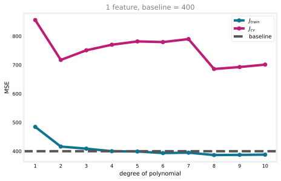
More polynomial features let the model fit the training data better, and \(J_{train}\) keeps falling as the degree increases. By degree 4 it dips just under the baseline of 400, so from here on these models count as low bias by that standard.
NoteWhy the exact wiggles above degree 7 vary from computer to computer
The input \(x\) here runs into the thousands, so \(x^{10}\) reaches about \(10^{35}\), and after standardization the columns for \(x^9\) and \(x^{10}\) are almost perfectly correlated. The scaled feature matrix at degree 10 has a condition number around \(10^{9}\), which means the least-squares problem barely has a unique answer, and the solution genuinely depends on the solver’s internal tolerance. Re-running this exact code with different library versions gives \(J_{cv}\) values at degree 10 anywhere from about 700 to about 910, while the low-degree values match to the decimal, because those are well-conditioned. If you run the original course notebook and see slightly different high-degree wiggles than the plot above, this is why. The conclusions do not change: \(J_{train}\) crosses the baseline near degree 4, and \(J_{cv}\) stays far above it at every degree. This instability is also a preview of why regularization helps, since the \(\lambda\) penalty makes the ill-conditioned problem well-behaved again.
But baselines are not fixed facts, they depend on what is realistically achievable for the task. Redraw the same sweep against a stricter baseline of 250, perhaps set by consulting a domain expert.
_ = train_plot_poly(x_train, y_train, x_cv, y_cv, max_degree=10, baseline=250,
title="1 feature, baseline = 250")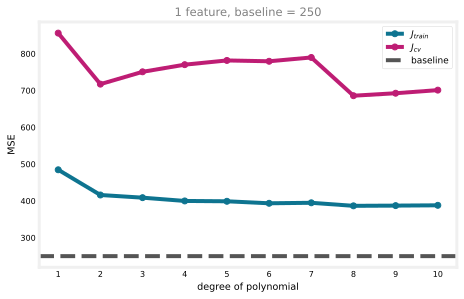
Against this stricter target, every model still sits above the baseline. These are still high-bias models, and adding more polynomial terms of the same single feature is not going to close that gap. Time to try something else.
Try Getting Additional Features
The second dataset adds a second input feature, so the model has more raw information to work with, not just higher powers of the same one.
x_train, y_train, x_cv, y_cv, x_test, y_test = prepare_dataset("../../media/c2w3_lab2_data2.csv")
print(f"first 5 rows of the training inputs (2 features):\n{x_train[:5]}")
_ = train_plot_poly(x_train, y_train, x_cv, y_cv, max_degree=6, baseline=250,
title="2 features, baseline = 250")first 5 rows of the training inputs (2 features):
[[3.75757576e+03 5.49494949e+00]
[2.87878788e+03 6.70707071e+00]
[3.54545455e+03 3.71717172e+00]
[1.57575758e+03 5.97979798e+00]
[1.66666667e+03 1.61616162e+00]]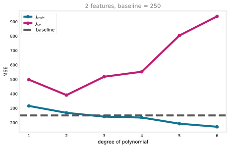
With the second feature available, \(J_{train}\) at degree 4 drops to about 235, now below the 250 baseline. The extra feature gave the model real information it did not have before, which a high-degree polynomial of a single feature could never substitute for.
Try Decreasing the Regularization Parameter
A third lever is \(\lambda\). Too large a \(\lambda\) forces the parameters toward zero regardless of what the data says, which can itself cause underfitting. Fit a degree-4 polynomial on the two-feature dataset with Ridge, sweeping \(\lambda\) down from 10 to 0.1.
reg_params = [10, 5, 2, 1, 0.5, 0.2, 0.1]
_ = train_plot_reg_params(reg_params, x_train, y_train, x_cv, y_cv, degree=4, baseline=250,
title="Decreasing $\\lambda$ fixes high bias (degree 4)")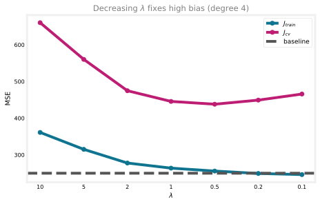
At \(\lambda = 10\), \(J_{train} \approx 361\), well above the baseline: the penalty on the weights is so heavy that the model cannot use its degree-4 flexibility at all. As \(\lambda\) shrinks, that restriction loosens and \(J_{train}\) drops toward the baseline, reaching about 246 at \(\lambda = 0.1\). Decreasing \(\lambda\) is doing exactly what the table earlier said: less weight on keeping parameters small means more attention on fitting the training set.
Review Questions
1. In the degree-vs-baseline plots, why does the same set of models look high bias against a baseline of 250 but low bias against a baseline of 400?
TipAnswer
“High bias” is not an absolute property of a model, it is a comparison to what is realistically achievable. The models’ \(J_{train}\) values did not change between the two plots, only the baseline did. Against the more forgiving 400 baseline they cleared the bar; against the stricter 250 baseline the same errors are too high.
1. In the second dataset, why does adding a genuinely new feature help more than adding higher powers of the original one?
TipAnswer
Higher powers of the same feature (\(x^2\), \(x^3\), …) still only encode information already present in \(x\). A second, independent feature can carry information the model never had access to before, which is often exactly what closes a high-bias gap that more polynomial terms cannot.
Fixing High Variance
Now the opposite problem: a model that has overfit and needs to generalize better.
Try Increasing the Regularization Parameter
The same degree-4 model on the two-feature dataset, but now sweeping \(\lambda\) up from 0.01 to 1.
reg_params = [0.01, 0.02, 0.05, 0.1, 0.2, 0.5, 1]
_ = train_plot_reg_params(reg_params, x_train, y_train, x_cv, y_cv, degree=4, baseline=250,
title="Increasing $\\lambda$ fixes high variance (degree 4)")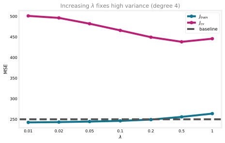
At \(\lambda = 0.01\), barely any regularization, \(J_{cv} \approx 501\). As \(\lambda\) grows, \(J_{cv}\) falls to about 438 around \(\lambda = 0.5\), a real improvement, while \(J_{train}\) only creeps up slightly. A small \(\lambda\) keeps the model low bias, but by itself it does little for variance; some regularization is needed to keep the model from chasing noise in the training set.
Try Smaller Sets of Features
Some features actively hurt generalization, especially irrelevant ones. The third dataset is the same two features as before, plus a meaningless random ID column tacked on.
x_train2, y_train2, x_cv2, y_cv2, _, _ = prepare_dataset("../../media/c2w3_lab2_data2.csv")
x_train3, y_train3, x_cv3, y_cv3, _, _ = prepare_dataset("../../media/c2w3_lab2_data3.csv")
print(f"2 features:\n{x_train2[:3]}\n")
print(f"3 features, first column is a random ID:\n{x_train3[:3]}")2 features:
[[3.75757576e+03 5.49494949e+00]
[2.87878788e+03 6.70707071e+00]
[3.54545455e+03 3.71717172e+00]]
3 features, first column is a random ID:
[[1.41929130e+07 3.75757576e+03 5.49494949e+00]
[1.51868310e+07 2.87878788e+03 6.70707071e+00]
[1.92662630e+07 3.54545455e+03 3.71717172e+00]]Train the same degree sweep on both datasets and compare.
fig, ax = plt.subplots(figsize=(7, 4.4))
for x_tr, y_tr, x_c, y_c, style, label in [
(x_train2, y_train2, x_cv2, y_cv2, "-", "2 features"),
(x_train3, y_train3, x_cv3, y_cv3, "--", "3 features (+ random ID)"),
]:
degrees = range(1, 5)
jtr_list, jcv_list = [], []
for d in degrees:
jtr, jcv = fit_eval(LinearRegression, x_tr, y_tr, x_c, y_c, d)
jtr_list.append(jtr); jcv_list.append(jcv)
ax.plot(degrees, jtr_list, marker="o", color="#0e7490", linestyle=style, label=f"{label}: $J_{{train}}$")
ax.plot(degrees, jcv_list, marker="o", color="#be1d74", linestyle=style, label=f"{label}: $J_{{cv}}$")
ax.axhline(250, color="#555", linestyle=":", label="baseline")
ax.set_xlabel("degree of polynomial"); ax.set_ylabel("MSE")
ax.set_xticks(range(1, 5))
ax.set_title("A random ID feature widens the train/cv gap", color="gray")
ax.legend(fontsize=8)
fig.tight_layout(); plt.show()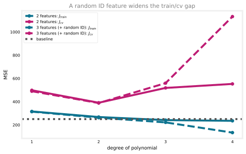
At degree 4, the 3-feature model’s \(J_{train} \approx 134\) is actually lower than the 2-feature model’s \(\approx 235\), the random ID gives it one more way to fit the training noise. But its \(J_{cv} \approx 1{,}133\) is roughly double the 2-feature model’s \(\approx 553\). Look at the gap between the two lines, not just \(J_{train}\) alone: a lower training error paired with a much wider train/cv gap is a warning sign, not a win. The model is not learning from the random ID, since it has no real relationship to the target, it is just memorizing it. Dropping the irrelevant feature closes most of that gap.
Get More Training Examples
Finally, the classic fix: more data. The fourth dataset has 1,000 examples. Train a degree-4 model on growing subsets, from 10 percent up to the full training and cross-validation sets, and trace out the learning curve.
x_train4, y_train4, x_cv4, y_cv4, _, _ = prepare_dataset("../../media/c2w3_lab2_data4.csv")
print(f"full training set: {x_train4.shape}, full cross-validation set: {x_cv4.shape}")
percents = [10, 20, 30, 40, 50, 60, 70, 80, 90, 100]
sizes, jtr_list, jcv_list = [], [], []
for p in percents:
n_tr = round(len(x_train4) * (p / 100))
n_cv = round(len(x_cv4) * (p / 100))
jtr, jcv = fit_eval(LinearRegression, x_train4[:n_tr], y_train4[:n_tr],
x_cv4[:n_cv], y_cv4[:n_cv], degree=4)
sizes.append(n_tr + n_cv); jtr_list.append(jtr); jcv_list.append(jcv)
fig, ax = plt.subplots(figsize=(6.5, 4.2))
ax.plot(sizes, jtr_list, marker="o", color="#0e7490", label="$J_{train}$")
ax.plot(sizes, jcv_list, marker="o", color="#be1d74", label="$J_{cv}$")
ax.axhline(250, color="#555", linestyle="--", label="baseline")
ax.set_xlabel("total number of training + cv examples")
ax.set_ylabel("MSE")
ax.set_title("Learning curve, degree 4", color="gray")
ax.legend(fontsize=9)
fig.tight_layout(); plt.show()full training set: (600, 2), full cross-validation set: (200, 2)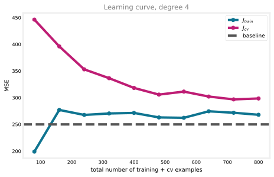
With only 80 examples (10 percent), \(J_{cv} \approx 446\), far above \(J_{train} \approx 199\). As the dataset grows toward all 800 examples, \(J_{cv}\) steadily falls toward roughly 298, closing in on \(J_{train}\), which stays relatively flat around 260 to 275 the whole time. That flatness is itself informative: more data does not change \(J_{train}\) much for a model that already fits reasonably well, its main effect is bringing \(J_{cv}\) down toward it, exactly the high-variance fix the table earlier predicted.
Review Questions
1. In the random-ID experiment, the 3-feature model has a lower \(J_{train}\) than the 2-feature model. Why is that not, by itself, good news?
TipAnswer
A lower \(J_{train}\) can simply mean the model has more room to fit noise in the training set, which is exactly what the random ID column allows. The signal to watch is \(J_{cv}\), and here it is much higher for the 3-feature model, roughly double, showing the extra flexibility has not helped it generalize at all.
1. In the learning curve, \(J_{train}\) barely changes as the dataset grows from 80 to 800 examples, while \(J_{cv}\) falls steadily. What does that combination tell you about this model?
TipAnswer
It has high variance rather than high bias. A flat, already-low \(J_{train}\) says the model is capable of fitting the pattern; a \(J_{cv}\) that keeps closing the gap as more data arrives is the signature that more training examples are exactly the right fix.
1. You increase \(\lambda\) from 0.01 to 1 and see \(J_{cv}\) improve while \(J_{train}\) rises only slightly. What would you expect if you kept increasing \(\lambda\) all the way to 10,000?
TipAnswer
Eventually the pattern reverses. Too much regularization forces the weights toward zero regardless of the data, which is exactly the high-bias failure from the first half of this lab: \(J_{train}\) would rise sharply, and \(J_{cv}\) would follow it back up rather than staying low. The lambda-vs-error curve is U-shaped, and cranking \(\lambda\) too far walks back up the other side.
Wrap Up
Across both labs on this page, the same workflow repeats. Split the data, compute \(J_{train}\) and \(J_{cv}\), compare them to a baseline, and let the pattern point at a specific fix, more features, fewer features, a different \(\lambda\), or more data. That habit of diagnosing before treating is the single most useful skill this page has to offer, and it applies whether the model in question is a polynomial, a regularized linear model, or a neural network.